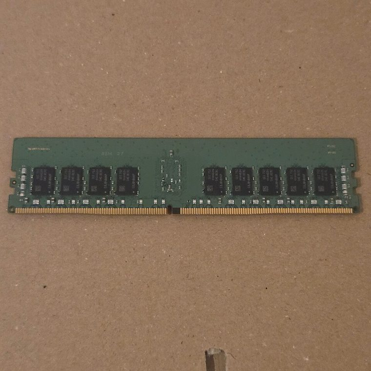

[ INDIVIDUAL COMPONENT // MEMORY / RAM ]
DDR4 ECC Registered DIMM (RDIMM)
DDR4 registered server DIMM class. This record identifies a distinct product or standards-defined module class; specifications not verified for this exact identity are deliberately left open.

IDENTITY: DDR4 ECC Registered DIMM (RDIMM) is cataloged as ddr4 registered server dimm class. Standards entries describe a module class; named manufacturer entries describe one SKU. Do not treat them as interchangeable records.
Recorded specifications
| Catalog identity | DDR4 ECC Registered DIMM (RDIMM) |
|---|---|
| Record type | DDR4 registered server DIMM class |
| Verified specifications | 288-pin DDR4 DIMM with register/buffer between host command/address signals and DRAM devices, plus ECC check-bit storage. Speed, capacity, ranks, timing, voltage, and buffer revision depend on the module. |
| Compatibility | Requires a memory controller and board specifically supporting DDR4 RDIMMs. UDIMM and RDIMM populations are generally mutually exclusive; follow the server vendor population rules, channel/rank limits, and CPU SKU support. |
| Unverified/variable details | Only values supported by the cited standard or manufacturer source are stated. Confirm exact part number/revision, SPD, ranks, timings, and voltage on the specimen when not specified above. |
Platform compatibility and service
- Requires a memory controller and board specifically supporting DDR4 RDIMMs. UDIMM and RDIMM populations are generally mutually exclusive; follow the server vendor population rules, channel/rank limits, and CPU SKU support.
- Before installation, record the full label, manufacturer, part number, revision/date code, contact condition, chip markings, and SPD contents where present.
- Use ESD precautions, handle the module by its edges, and never force it into a slot with different keying. Power down and follow the host’s service manual.
- For server/ECC modules, confirm CPU support, buffering type, channel population, supported ranks/densities, and firmware behavior; physical fit is not proof of ECC operation.
Archival and service notes
Class/standard description only, not a manufacturer part. Capture registered/buffered type, rank, organization, SPD, and exact server platform compatibility from the label and service manual. Photograph both sides before cleaning; retain the host manual, SPD dump, test host, BIOS revision, and memory-test result with the catalog record.
Sources & further reading
- JEDEC — DDR4 SDRAM standard (JESD79-4)JEDEC DDR4 standard context; module construction options vary.
- Kingston — Server memory / RDIMM guidanceManufacturer reference on server memory classes and platform matching.
Manufacturer source identifies the named SKU where provided; standards pages describe a generation or module class. A source-family page may not capture every revision. Check the precise specimen and platform service documentation.